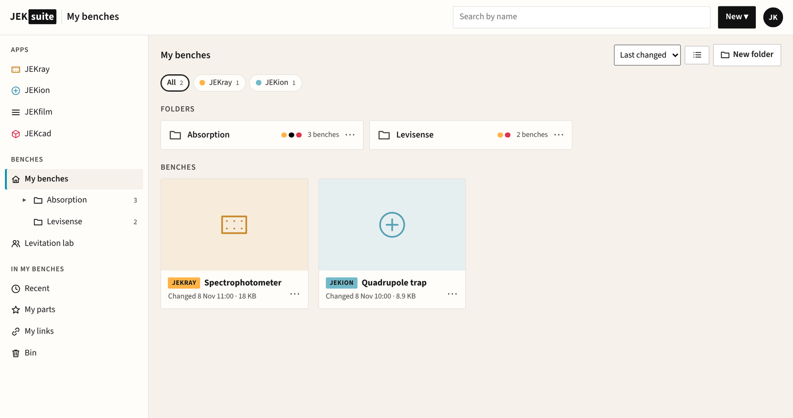
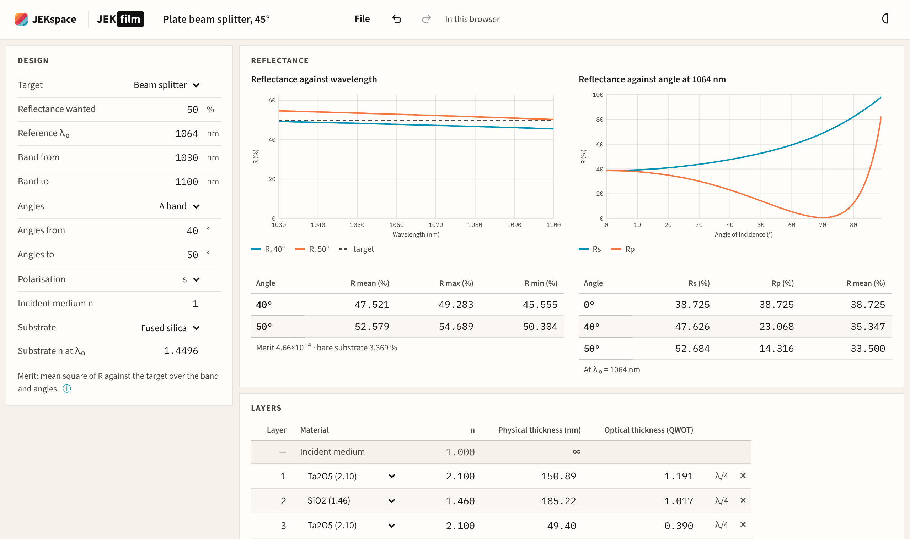
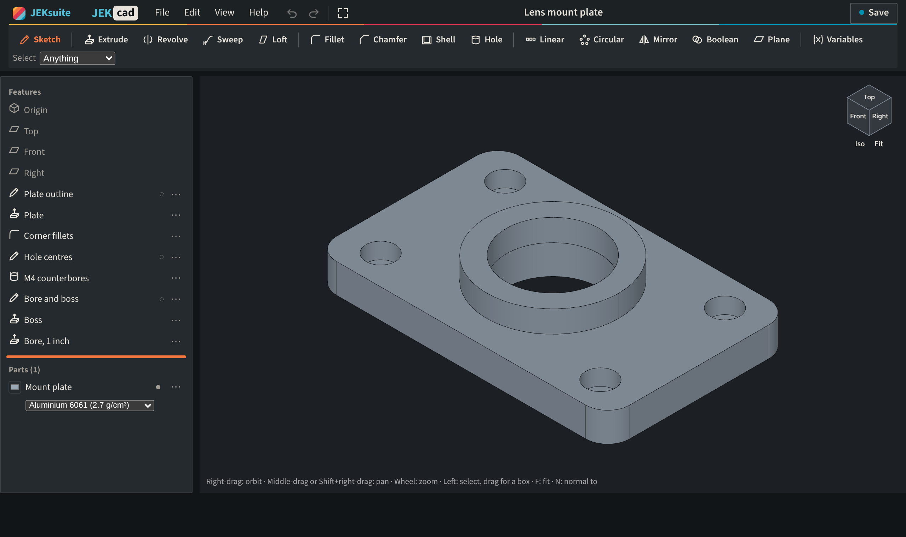

JEKsuite: every JEK app in one place.
JEKray, JEKion, JEKfilm and JEKcad run in your browser and share one account. Every bench you keep in the cloud, from every app, sits in JEKsuite with its history, and one plan covers them all.

JEKray
Optics, fibre, electronics and RF on one bench, traced as you move parts. Design lenses and send drawings to the workshop.

JEKion
Charged-particle traps and beam optics: bring the electrodes in from CAD, solve the field and fly the ions.

JEKfilm
Thin-film coatings for your band and angles, optimised and toleranced, then put on a JEKray face.

JEKcad
Parametric CAD: sketch, dimension and build parts from a feature list. In development.

How the apps work together
One account
One sign-in, with Google, Microsoft or email, works in every app. Every app is free to use with no account at all.
One cloud
Benches from every app sit in your workspace and your teams’, in folders. Open any in its app, see its history, fork it, compare and merge versions.
Between the apps
A JEKfilm coating goes on a JEKray face and traces with the bench. Save the coating again and the bench offers to update.
One plan
A JEKrayPro subscription covers every app, with the cloud and the optimisers.